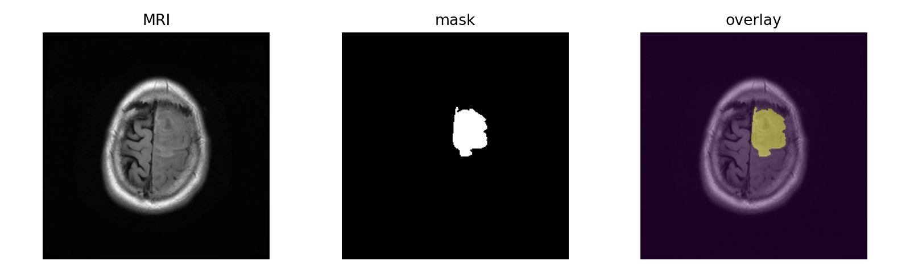
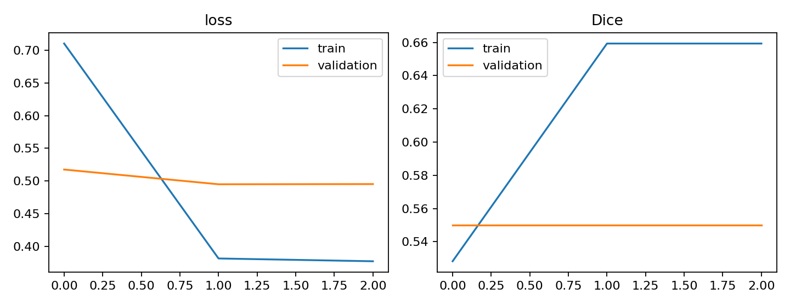
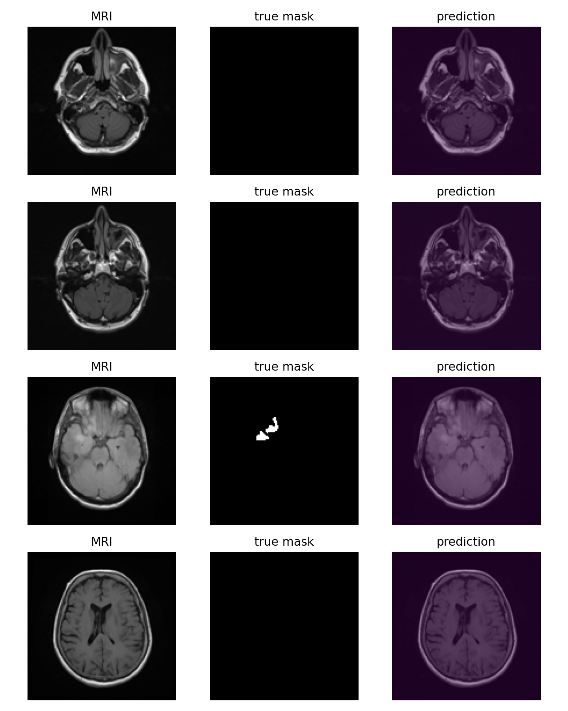

实践项目参考答案 01：MRI 脑肿瘤图像分割
本实践在 Kaggle Notebook 中读取配对的 MRI 切片与肿瘤掩膜，按患者划分数据，训练轻量 U-Net，并用 Dice 与 IoU 评价预测区域。
以下内容按 Notebook 的执行顺序说明数据检查、代码补全、训练、评价和输出文件。
图像与 mask 配对
配对规则使用文件名 `_mask`，患者标识来自文件夹。空 mask 仍是有效样本。

参考答案
patient_count=len(set(x[2] for x in pairs))
mask_nonempty=[]
for _,m,_ in pairs:
mask_nonempty.append((np.array(Image.open(m).convert('L'))>0).any())
positive_masks=int(np.sum(mask_nonempty))
empty_ratio=1-positive_masks/len(mask_nonempty)患者级划分
GroupShuffleSplit 让同一患者的切片只进入一个集合。
参考答案
gss=GroupShuffleSplit(n_splits=1,test_size=.2,random_state=SEED) train_idx,test_idx=next(gss.split(idx,groups=groups))
Dice 函数
Dice 使用交集的两倍除以预测面积与真实面积之和。
参考答案
def dice_score(prob,target,threshold=.5,eps=1e-6):
pred=(prob>=threshold).float()
dims=tuple(range(1,pred.ndim))
inter=(pred*target).sum(dims)
return ((2*inter+eps)/(pred.sum(dims)+target.sum(dims)+eps)).mean()U-Net 卷积块
两次卷积保持空间尺寸，BatchNorm 和 ReLU 提供稳定非线性表征。
参考答案
self.block=nn.Sequential( nn.Conv2d(cin,cout,3,padding=1),nn.BatchNorm2d(cout),nn.ReLU(), nn.Conv2d(cout,cout,3,padding=1),nn.BatchNorm2d(cout),nn.ReLU())
训练更新
BCE 提供像素分类信号，1-Dice 强调前景重叠。
参考答案
opt.zero_grad() logits=model(x) prob=torch.sigmoid(logits) loss=bce(logits,y)+(1-dice_score(prob,y)) loss.backward();opt.step()
阈值选择
只用验证集选择阈值，测试集使用一次。
参考答案
for t in thresholds:
val_dices[t]=evaluate(val_loader,t)[0]
best_threshold=max(val_dices,key=val_dices.get)结果解释
实际运行结果


训练切片 802，验证切片 156，测试切片 242；最佳阈值 0.5；测试 Dice 0.6115702，测试 IoU 0.6115702。
平均 Dice 之外，逐图查看漏分、误分和空标签案例。

参考答案
报告 test_dice、test_iou、best_threshold，并展示至少四组 MRI/真实mask/预测mask。